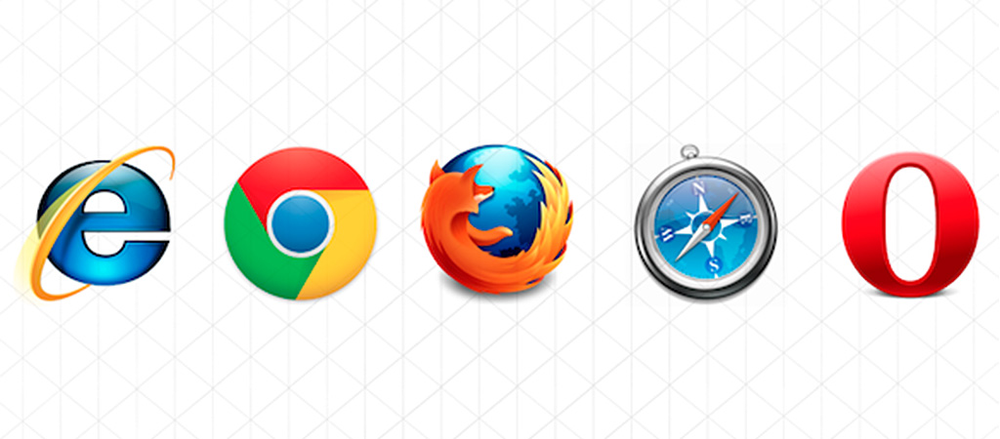
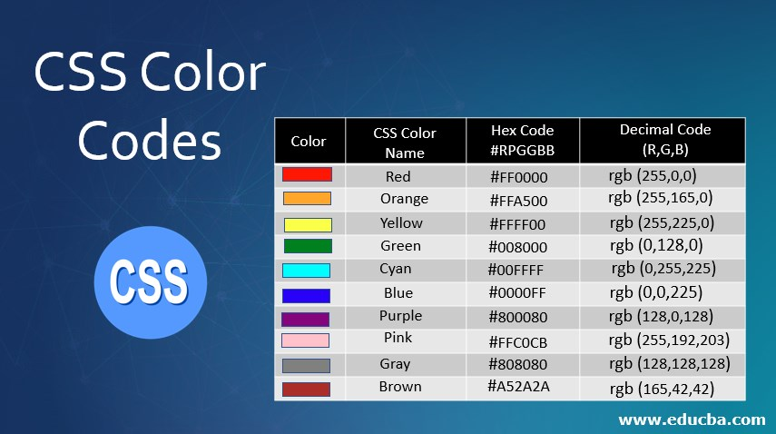
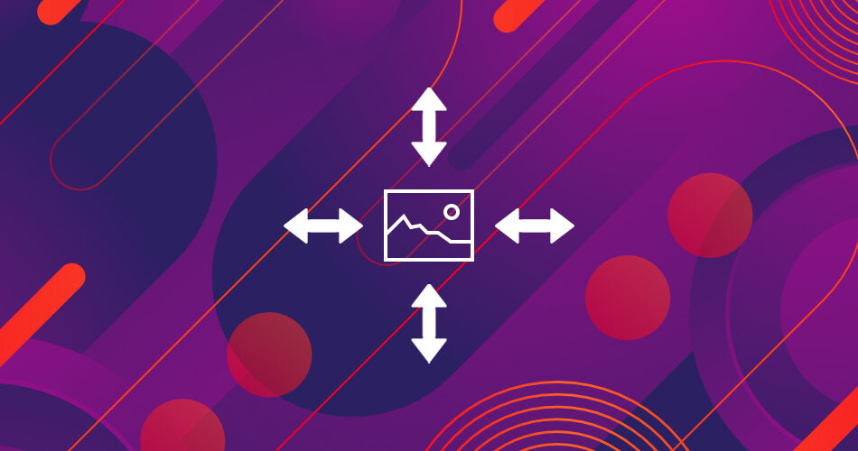
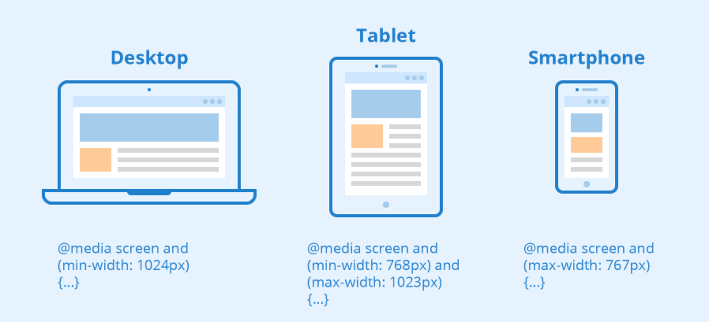
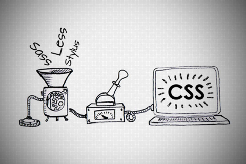
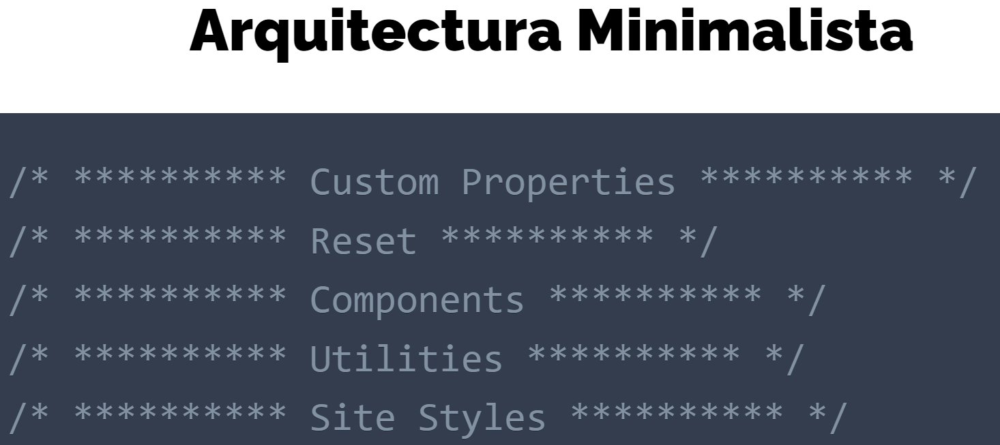

Ya NO hablamos de nuevas versiones de CSS. Ya que no es necesario, digamos que ahora CSS esta
"dividido" a lo que se le llaman módulos, enfocados en propiedades para un uso especifico, por ejemplo:
FlexBox, Grid, transiciones, animaciones, etc... por lo que no todos avanzan al mismo ritmo también puede que
vayan saliendo nuevos, eliminando y demás. Por lo que los módulos Iran avanzando cada uno a su ritmo y estos si
tienen nuevas versiones.
@import url(style.css);
Con esta regla podemos llamar otras hojas de estilo. Sin embargo,
no es recomendado ya que esta es una propiedad que bloquea, se decir, que nuestro navegador no seguirá
con la carga de nuestro documento hasta que esta propiedad no se haya leído. Esta nos puede traer muchos
problemas sobre todo cuando queremos que nuestros proyectos crezcan.
Selectores
Un selector CSS es la primera parte de una regla CSS. Es un patrón de elementos y otros términos que indican
al navegador qué elementos HTML se seleccionan para aplicarles una regla que incluye los valores de las
propiedades CSS
P.Clases
Una pseudoclase es un selector que marca los elementos que están en un estado específico, por ejemplo, los
que son el primer elemento de su tipo, o aquellos por los que el cursor les pasa por encima
P.Elementos
Los pseudoelementos son una característica de CSS que permite hacer referencias a «comportamientos virtuales
no tangibles», dicho de otra forma, seleccionar y dar estilo a elementos que no existen en el HTML, o que no
son un simple elemento en sí
Algoritmo
Es la jerarquía con la que el navegador aplica los estilos al documento HTML
Reset-Normalize
Estilos que podemos aplicar a nuestro documento al iniciar cualquier proyecto
Prefijos

Un prefijo se antepone a una regla CSS destinado a que dicha regla sea leída y aplicada exclusivamente por
un navegador (por ejemplo Chrome) pero no por el resto de navegadores
Modelo de Caja
La manera en que el navegador representa todas las etiquetas HTML que están dentro del body
Float & Clear
Float Clear
Colapso
El colapso de márgenes sucede cuando dos elementos bloque adyacentes tienen un determinado valor de margin ,
entonces estos márgenes se solapan en un solo valor, el mayor de ambos
Centrar Cajas
¿Te has preguntado como centrar nuestro contenido perfectamente? Precisamente esto es lo que he aprendido a
hacer y te lo he querido compartir
Posicion
Tenemos varias formas de posicionar nuestros elementos con css, en este articulo compartiré por lo menos los
mas populares
Z-index
Esta propiedad de css nos permite determinar la "profundidad" de nuestros elementos
Display
Establece como se trata un elemento, si en bloque o en linea, ¿Tenemos mas variantes? pues aquí lo sabremos
Overflow
La propiedad overflow especifica si recortar el contenido o agregar barras de desplazamiento cuando
el contenido de un elemento es demasiado grande para caber en el área especificada.
Border
Es una propiedad abreviada para establecer el mismo ancho, color y estilo para los cuatro bordes de un
cuadro
Margin-Padding
Con estas propiedades definimos los espacios que nuestros elementos tendrán por dentro y fuera
Colores

El color es una si no la parte mas importante al momento de decorar nuestro sitio web, y para ello tenemos
varias formas de controlar y aplicar colores con CSS
Unidades CSS
En CSS se utilizan dos longitudes diferentes: relativa y absoluta. Es importante conocer la diferencia para
entender qué dimensiones van a tener las cosas
Variables
Las Custom Properties (a veces denominadas variables CSS) son entidades definidas por los autores de
CSS que contienen valores específicos para reutilizar en un documento.
Funciones
Las funciones CSS se utilizan para calcular o asignar un valor a los elementos HTML
Font Text
Para controlar nuestro texto tenemos varias propiedades para hacerlo, miraremos algunas de ellas
Border & Outline
Estas propiedades son esenciales cuando queremos delimitar nuestro elemento y darle un efecto fantástico
Background
Al definir una imagen de fondo en nuestros elementos se nos habilitan distintas propiedades para
manipularla.
Imágenes

Las imágenes son una manera sencilla y directa de dar información, para ello contamos con propiedades en
CSS. Para que podamos dar nuestro mensaje de una forma mejor
Listas
Podemos llevar nuestras listas al siguiente nivel haciendo uso de las herramientas que CSS no brinda
Tablas
Podemos hacer uso de CSS para que nuestra tabla quede mas elegante y pueda brindar al usuario la información
mas clara y legible
Formulario
Creamos un formulario y le aplicamos estilos típicos para que quede mas elegante y mucho mejor en su diseño
Efectos visuales
Las increíbles cosas que podemos hacer con CSS y Las sombras no son la excepción, por lo que es fundamental
aprender que propiedades nos pueden ayudar a aplicarlas
Degradados
Tenemos increíbles formas de aplicar degradados en nuestros elementos, veremos cuales propiedades y opciones
podemos usar
Filtros
Los filtros CSS son una característica muy atractiva de CSS que permite aplicar ciertos efectos de imagen,
propios de aplicaciones de retoque fotográfico
Modos de Mezcla
La propiedad CSS mix-blend-mode describe cómo el contenido de un elemento debe mezclarse con el contenido
del elemento que está tras él y con el fondo del elemento
Enmascaramiento
Tenemos propiedades increíbles para crear formas geométricas con nuestro elemento, este le dará al usuario
una increíble sensación al ver nuestro contenido
Formas
Tenemos la posibilidad de hacer que nuestro elemento siga una figura al mostrar la información, esto es lo
que hice y te presento un ejemplo de las cosas maravillosas que podemos lograr
Scroll-effects
Al crear una pagina web tenemos muchas posibilidades para hacer que el usuario navegue por el, en este caso
veremos los efectos que le podemos aplicar a una pagina Scroll One Page
Movimiento
Para dar vida a nuestros elementos tenemos distintas formas y efectos geniales, pero esto se ve de mala
manera si lo hacemos súbitamente, para ello contamos con el movimiento en CSS, para subir nuestros efectos
de nivel
Animación
Con las animaciones si que podemos llevar a otro nivel cualquier cosa que creamos y diseñemos, por lo que es
esencial aprenderlas y dominarlas bien
Contenedores
Hacer que nuestras cajas sean flexibles hara que nuestro sitio se vea genial en cualquier dispositivo
Multimedia
Nuestro contenido digital es fundamental que se vea bien desde donde sea, para ello CSS nos brinda algunas
características
Media queries

Una de las herramientas que tenemos para definir cuando nuestro contenido cambiara de enfoque para los
dispositivos
Breakpoints
¿A que medida debo cambiar el diseño de mi sitio para que se adapte a los dispositivos? ¿ Que unidad de
medida uso? De esto hice algunas anotaciones
Viewport
Luego de que apple agregara esta herramienta para aumentar la calidad de sus dispositivos, la industria la
ha tomado como estandar para tomar la distancia que tenemos disponible para mostrar nuestro contenido
@supports
Esta propiedad nos ayuda a detectar que características soporta nuestro navegador
SEO
El proceso de mejorar su sitio para los motores de búsqueda
Grid responsiva
Veremos una forma de como lograr que nuestra grid se adapte al tamaño de la pantalla sin usar media queries
Desktop-Mobile
Tenemos dos formas de diseñar nuestro sitio para que se vea bien en cualquier dispositivo. ¿Cual uso?
Adaptive Design
"Paradigma " enfocado a tener en cuenta las características de los dispositivos y mostrar contenido a
partir de ello
RESS
Adaptive design con el enfoque de la lógica en el servidor
Responsible Design
Agregaremos al adaptive design buenas practicas de JavaScript para que podamos tener en cuenta las
características de los dispositivos
Fluid Design
Enfocado en hacer que nuestro sitio sea responsivo con el menor uso de media queries posible
Arquitectura CSS
Distintas herramientas nos dan un enfoque o recomendación de como debemos ordenar y dividir nuestro código
Frameworks CSS
Sitios o herramientas que nos pueden ayudar a realizar nuestros proyectos rápidamente
Procesadores

¿Crees que a CSS le hace falta algo? Tenemos utilidades para que le dan superpoderes
Arquitectura Minimalista

Propuesta que nos hace JonMircha para organizar nuestro código